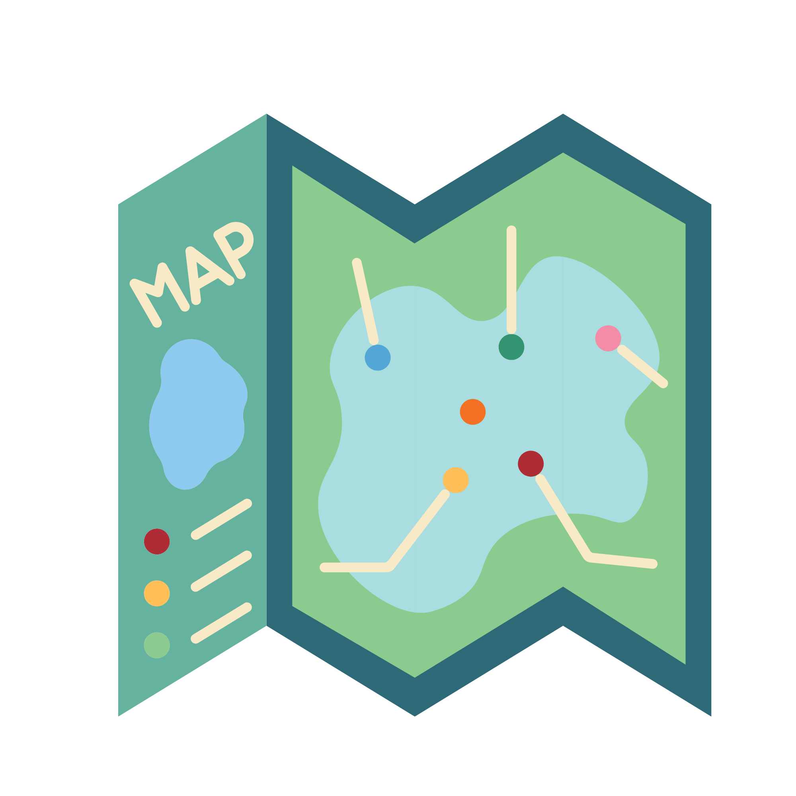
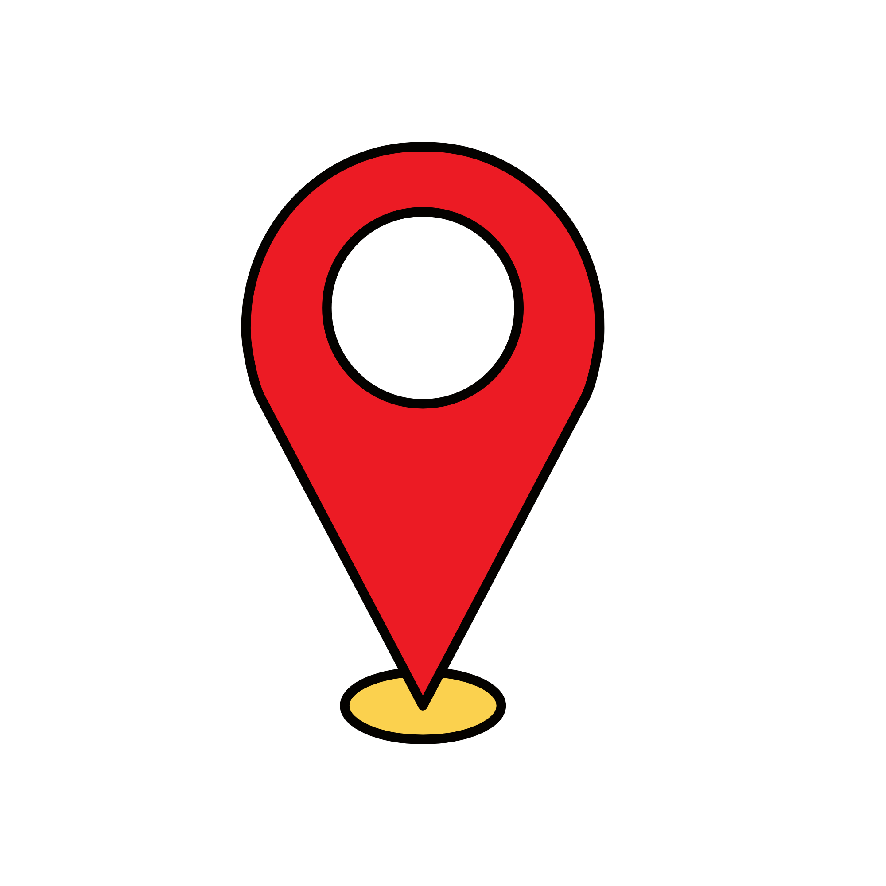
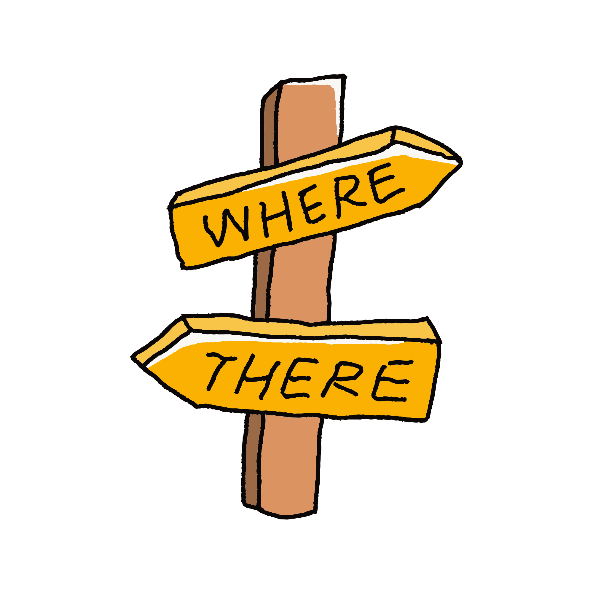

Amenities
Flashcards for places and facilities in town.
View Resources

Prepositions of Place
Resources for describing where places are.
View Resources

Directions
Resources for asking for and giving directions.
View Resources